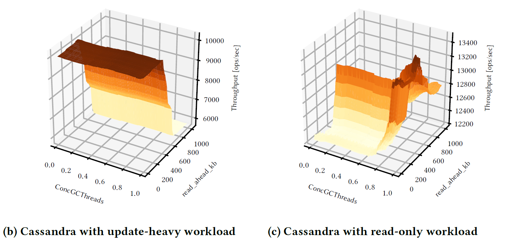
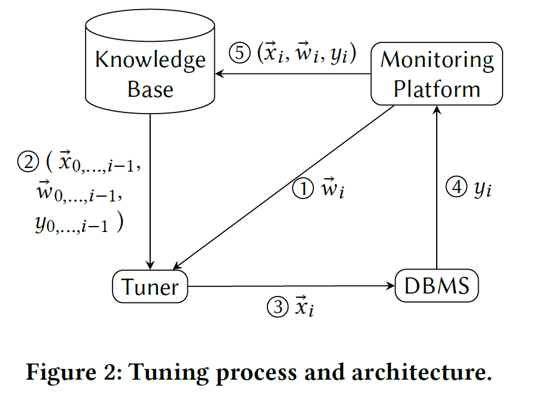
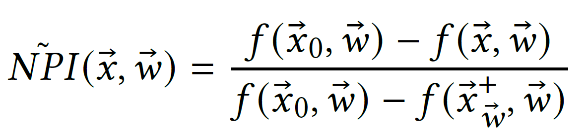

CGPTuner: a Contextual Gaussian Process Bandit Approach for the Automatic Tuning of IT Configurations Under Varying Workload Conditions
- Authors: Stefano Cereda, Stefano Valladares, Paolo Cremonesi, Stefano Doni
- Institute:
- Politecnico di Milano, Milan, Italy
- Akamas, Milan, Italy
- Published at VLDB'21 (Vol. 14, No. 8)
- Paper Link: http://vldb.org/pvldb/vol14/p1401-cereda.pdf
Background
A modern DBMS has hundreds of tunable configurations. Selecting a proper set of configurations is crucial for the performance of the system.
Motivation
- Hundreds of parameters => large search space
- We also need to consider the parameters of IT stacks (e.g., OS, Java VM) to maximize the performance
- which means more parameters to tune
- The same parameters may also not behave in the same way in different workloads (see Figure 1)

Figure 1: Cassandra under different YCSB workloads while varying two configurations
Problem
Goal: To design a tuning algorithm able to consider the entire IT stack and continuously adapt to the current workload.
Previous Work
- Needs to collect data offline
- iTune
- Uses Gaussian Processes to approximate the performance surface with different configurations
- Con: Learned knowledge cannot be transferred between workloads, which means that we need to rebuild the model for each workload.
- OtterTune
- Has ability to reuse the past experience in other workloads to a new unseen workloads
- Con: Requires to collect large amount of data set (over 30k trials per DBMS, about several months)
- iTune
- Online Learning Methods
- OpenTuner
- Uses multiple heuristic search algorithm and dynamically selects the best one
- Con? Unknown (TODO)
- BestConfig
- Iterative sampling strategy
- Con? Unknown (TODO)
- OpenTuner
Method
Problem Modeling
A contextual bandit problem:
- Inputs (Context):
- The current workload \(\vec{w}_i \in W\)
- Output (Action):
- The configurations of the IT stack \(\vec{x}_i \in X\)
- The response of the system (Reward):
- Certain performance indicator (e.g., throughput, latency...) \(y_i \in \mathbb{R}\)
Workflow:

Main Idea
Bayesian Optimization using Gaussian Processes:
- The regression model: multi-variate Gaussian distributions
- Kernel: \(k((\vec{x}, \vec{w}), (\vec{x}', \vec{w}')) = k(\vec{x}, \vec{x}') + k(\vec{w}, \vec{w}')\)
- where \(k(a, a')\) is Matérn 5/2 kernel for both \(a = \vec{x}\) and \(\vec{w}\)
- The acquisition function: the GP-Hedge method
Key Steps:
- Sample a function \( f_{\vec{w}_i}\) using Gaussian Processes with previous observations \( (\vec{x}_n, \vec{w}_n, y_n) \) for \( n = 0 ... i - 1 \) and current workload \(\vec{w}_i\)
- Using the acquisition function \( a(.) \) to optimize \( max_\vec{x} a(f_{\vec{w}_i}, \vec{x}) \) to obtain best \( \vec{x} \)
Normalizing Performance
In order to avoid bad exploration due to zero mean sample far away from previous observation, they found that, instead of directly using the performance indicator \( y_i \), we should use Normalized Performance Improvement (NPI):

where \( \vec{x}^+_\vec{w} \) is the best configuration we have seen so far.
NPI must be re-normalized after each iteration since the best configuration may change.
Experiments
Conclusion
Questions
- What does
vm.dirty_ratiodo? - It seems like OpenTuner has already used multi-armed bandits to solve tuning problems. What are the differences between it and this work?
Background Knowledge
TODO
- Baysian Optimization
- Gaussain Processes
- GP-Hedge methods